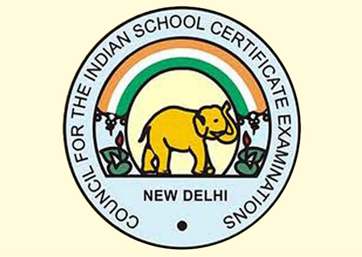
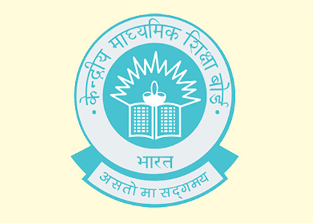
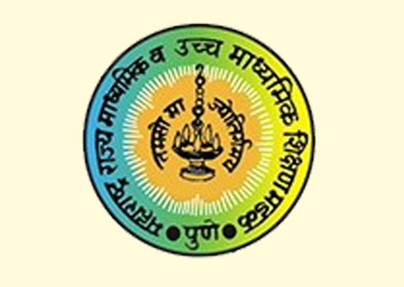

Preface
'We gently cup our hands around the tiny feet of your little one as they take their first steps. We do so till they grow and take strides.'
At WISDOM, the school curriculum is made interesting with integrated teaching. Students from every class and board get an opportunity to develop their learning skills with us. We conduct both offline and online classes for all major subjects for Science and Commerce streams (ICSE, CBSE, State Boards).
We provide school level tutoring and global level test training for both K-12 curriculum and for competitive exams. We follow an integrated approach to teaching that makes children enjoy their learning.
Customized Assignments given to develop writing skills, analytical skills, expression power and memorization lead to success of every child at WISDOM. We, at WISDOM, believe in Teachers and Parents working as a team for the holistic development of students. Consequently, one- to -one parent-teacher meetings are scheduled to identify the students' strengths and struggles and pragmatically help them.
ICSE Board
This board provides a gamut of subjects to learn and master. There is in-depth study of each subject from the primary classes which requires an entirely different approach to teaching.
Wisdom adopts an application- based teaching emphasizing on inductive learning.
Regular chapter-wise testing for each subject is conducted and the performance is recorded.
Test papers are specifically based on the school exam pattern.
The tests develop the specification and analytical skills of the students.
Easy to learn study notes are provided to enhance students' memorization ability.
Students are also given ample writing practice.
Regular feedback is given to the parents.
One- to -one parents teachers' meetings are periodically scheduled to identify the students' strengths and struggles and pragmatically help them.


CBSE Board
This board focusses on adapting innovative teaching methods and providing stress- free education. All national examinations conducted are based on the CBSE syllabus.
At Wisdom, we enthuse students to master NCERT texts and then use other well-illustrated reference books.
The methodology of teaching students of this board includes a variety of question-types.
Real life examples are blended with the concepts.
Regular chapter-wise testing for each subject is conducted and the performance is recorded.
Easy to learn study notes are provided to enhance students' memorization ability.
Students are also given ample writing practice.
Test papers are specifically based on the school exam pattern.
Regular feedback is given to the parents.
One- to -one parents teachers' meetings are periodically scheduled to identify the students' strengths and struggles and pragmatically help them.
STATE Board
This board focusses on state level topics and content of local relevance. The board has an extensive syllabus scope and focusses more on memorizing concepts.
At Wisdom, the school curriculum is made interesting with integrated teaching. We follow the school pattern and first build up the students' confidence for school level testing and examinations.
Regular chapter-wise testing for each subject is conducted and the performance is recorded.
Easy to learn study notes are provided to enhance students' memorization ability.
Students are also given ample writing practice.
Test papers are specifically based on the school exam pattern.
Regular feedback is given to the parents.
One- to -one parents teachers' meetings are periodically scheduled to identify the students' strengths and struggles and pragmatically help them.
